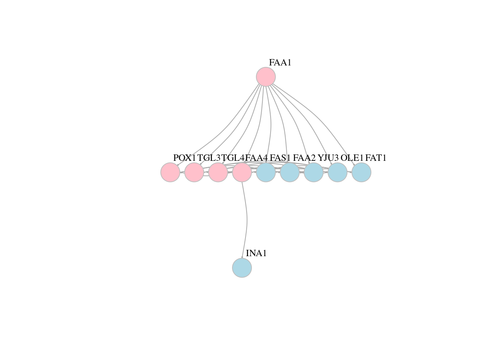
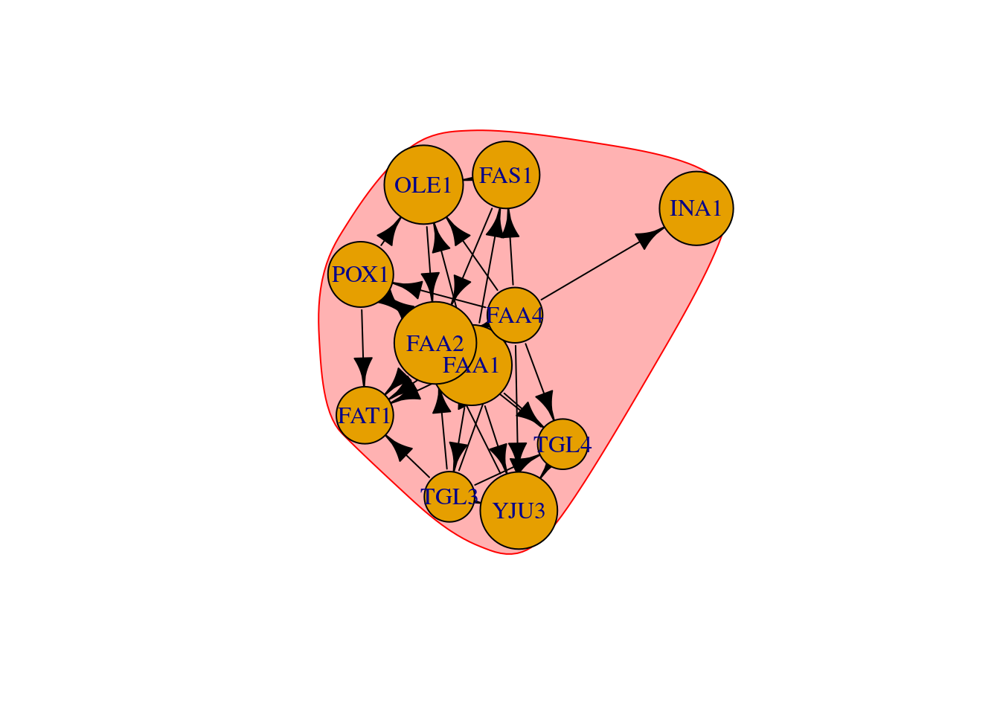

Chapter 13 Network analysis
13.1 Data processing
13.1.1 Load iGraph Library
13.1.2 Load data
## node1 node2
## 1 POX1 FAA2
## 2 FAA1 POX1
## 3 TGL3 YJU3
## 4 TGL4 YJU3
## 5 TGL3 TGL4
## 6 FAA4 POX113.2 Convert data frame to graph
# We can specify directed = T/F parameter if it is a directed/undirected graph respectively
# Default is directed graph
# Undirected graph
g1 = graph_from_data_frame(df, directed = F);
plot(g1)## IGRAPH c7d8800 DN-- 11 32 --
## + attr: name (v/c)
## + edges from c7d8800 (vertex names):
## [1] POX1->FAA2 FAA1->POX1 TGL3->YJU3 TGL4->YJU3 TGL3->TGL4 FAA4->POX1
## [7] POX1->FAT1 FAA1->FAT1 FAA4->FAS1 FAA1->FAS1 FAA4->FAT1 FAS1->FAA2
## [13] FAA4->OLE1 FAA1->FAA4 FAA1->OLE1 FAA2->FAT1 FAA1->TGL4 TGL3->FAA4
## [19] FAA1->TGL3 FAS1->OLE1 FAA1->YJU3 YJU3->FAA2 FAA4->YJU3 POX1->OLE1
## [25] FAA4->INA1 FAA1->FAA2 FAA4->FAA2 FAA4->TGL4 OLE1->FAA2 TGL3->FAT1
## [31] TGL4->FAA2 TGL3->FAA2# DN-B
# The description of an igraph object starts with up to four letters:
# D or U, for a directed or undirected graph
# N for a named graph (where nodes have a name attribute)
# W for a weighted graph (where edges have a weight attribute)
# B for a bipartite (two-mode) graph (where nodes have a type attribute)
# The description also lists node & edge attributes, for example:
# (g/c) - graph-level character attribute
# (v/c) - vertex-level character attribute
# (e/n) - edge-level numeric attribute13.3 Node and Edge details
## + 11/11 vertices, named, from c7d8800:
## [1] POX1 FAA1 TGL3 TGL4 FAA4 FAS1 FAA2 YJU3 OLE1 FAT1 INA1## [1] 11## [1] "POX1" "FAA1" "TGL3" "TGL4" "FAA4" "FAS1" "FAA2" "YJU3" "OLE1" "FAT1"
## [11] "INA1"## + 32/32 edges from c7d8800 (vertex names):
## [1] POX1->FAA2 FAA1->POX1 TGL3->YJU3 TGL4->YJU3 TGL3->TGL4 FAA4->POX1
## [7] POX1->FAT1 FAA1->FAT1 FAA4->FAS1 FAA1->FAS1 FAA4->FAT1 FAS1->FAA2
## [13] FAA4->OLE1 FAA1->FAA4 FAA1->OLE1 FAA2->FAT1 FAA1->TGL4 TGL3->FAA4
## [19] FAA1->TGL3 FAS1->OLE1 FAA1->YJU3 YJU3->FAA2 FAA4->YJU3 POX1->OLE1
## [25] FAA4->INA1 FAA1->FAA2 FAA4->FAA2 FAA4->TGL4 OLE1->FAA2 TGL3->FAT1
## [31] TGL4->FAA2 TGL3->FAA2## [1] 32## 11 x 11 sparse Matrix of class "dgCMatrix"## [[ suppressing 11 column names 'POX1', 'FAA1', 'TGL3' ... ]]##
## POX1 . . . . . . 1 . 1 1 .
## FAA1 1 . 1 1 1 1 1 1 1 1 .
## TGL3 . . . 1 1 . 1 1 . 1 .
## TGL4 . . . . . . 1 1 . . .
## FAA4 1 . . 1 . 1 1 1 1 1 1
## FAS1 . . . . . . 1 . 1 . .
## FAA2 . . . . . . . . . 1 .
## YJU3 . . . . . . 1 . . . .
## OLE1 . . . . . . 1 . . . .
## FAT1 . . . . . . . . . . .
## INA1 . . . . . . . . . . .13.4 Plot Parameters
# Vertexx param
# vertex.color Node color
# vertex.frame.color Node border color
# vertex.shape One of “none”, “circle”, “square”, “csquare”, “rectangle”, “crectangle”, “vrectangle”, “pie”, “raster”, or “sphere”
# vertex.size Size of the node (default is 15)
# vertex.size2 The second size of the node (e.g. for a rectangle)
# vertex.label Character vector used to label the nodes
# vertex.label.family Font family of the label (e.g.“Times”, “Helvetica”)
# vertex.label.font Font: 1 plain, 2 bold, 3, italic, 4 bold italic, 5 symbol
# vertex.label.cex Font size (multiplication factor, device-dependent)
# vertex.label.dist Distance between the label and the vertex
# vertex.label.degree The position of the label in relation to the vertex,where 0 right, “pi” is left, “pi/2” is below, and “-pi/2” is above
# edge.color Edge color
# edge.width Edge width, defaults to 1
# edge.arrow.size Arrow size, defaults to 1
# edge.arrow.width Arrow width, defaults to 1
# edge.lty Line type, could be 0 or “blank”, 1 or “solid”, 2 or “dashed”,3 or “dotted”, 4 or “dotdash”, 5 or “longdash”, 6 or “twodash”
# edge.label Character vector used to label edges
# edge.label.family Font family of the label (e.g.“Times”, “Helvetica”)
# edge.label.font Font: 1 plain, 2 bold, 3, italic, 4 bold italic, 5 symbol
# edge.label.cex Font size for edge labels
# edge.curved Edge curvature, range 0-1 (FALSE sets it to 0, TRUE to 0.5)
# arrow.mode Vector specifying whether edges should have arrows,
# possible values: 0 no arrow, 1 back, 2 forward, 3 both
plot(g, edge.arrow.size=0.1, vertex.color="gold", vertex.size=20,vertex.frame.color="gray",vertex.label.color="black",vertex.label.cex=0.8,vertex.label.dist=3,edge.curved=0.2)13.5 Network layouts


# Force-directed layouts
plot(g, layout=layout_with_fr,edge.arrow.size=0.1, vertex.color=veccol, vertex.size=20,vertex.frame.color="gray",vertex.label.color="black",vertex.label.cex=0.8,vertex.label.dist=3,edge.curved=0.2)# Another popular force-directed algorithm that produces nice results for connected graphs is Kamada Kawai
plot(g, layout=layout_with_kk,edge.arrow.size=0.1, vertex.color=veccol, vertex.size=20,vertex.frame.color="gray",vertex.label.color="black",vertex.label.cex=0.8,vertex.label.dist=3,edge.curved=0.2)# On single plot
layouts <- grep("^layout_", ls("package:igraph"), value=TRUE)[-1]
layouts <- layouts[!grepl("bipartite|merge|norm|sugiyama|tree", layouts)]
par(mfrow=c(3,3), mar=c(1,1,1,1))
for (layout in layouts) {
print(layout)
l <- do.call(layout, list(g))
plot(g, edge.arrow.mode=0, layout=l, main=layout)
}## [1] "layout_as_star"## [1] "layout_components"## [1] "layout_in_circle"## [1] "layout_nicely"## [1] "layout_on_grid"## [1] "layout_on_sphere"## [1] "layout_randomly"## [1] "layout_with_dh"## [1] "layout_with_drl"## [1] "layout_with_fr"## [1] "layout_with_gem"## [1] "layout_with_graphopt"## [1] "layout_with_kk"## [1] "layout_with_lgl"## [1] "layout_with_mds"13.6 Network and node descriptives
13.6.1 Edge density
The proportion of present edges from all possible edges in the network.
## [1] 0.2909091## [1] 0.2644628## [1] 0.290909113.6.2 Diameter
A network diameter is the longest geodesic distance (length of the shortest path between two nodes) in the network. In igraph, diameter() returns the distance, while get_diameter() returns the nodes along the first found path of that distance.
## [1] 2## [1] 2## + 3/11 vertices, named, from c7d8800:
## [1] FAA1 FAA4 INA1# Color nodes along the diameter:
vcol <- rep("gray40", vcount(net))
vcol[diam] <- "gold"
ecol <- rep("gray80", ecount(net))
ecol[E(net, path=diam)] <- "orange"
plot(net, vertex.color=vcol, edge.color=ecol, edge.arrow.mode=0)### Node degrees The function degree() has a mode of in for in-degree, out for out-degree, and all or total for total degree
## INA1 FAS1 POX1 TGL4 YJU3 OLE1 FAT1 TGL3 FAA1 FAA2 FAA4
## 1 4 5 5 5 5 5 6 9 9 1013.7 Centrality & centralization
Centrality applies to node level while Centralization applies to graph level
13.7.1 Degree centrality
## POX1 FAA1 TGL3 TGL4 FAA4 FAS1 FAA2 YJU3 OLE1 FAT1 INA1
## 2 0 1 3 2 2 8 4 4 5 1# Returns res - vertex centrality, centralization, and theoretical_max - maximum centralization score for a graph of that size.
centr_degree(net, mode="in", normalized=T)## $res
## [1] 2 0 1 3 2 2 8 4 4 5 1
##
## $centralization
## [1] 0.5090909
##
## $theoretical_max
## [1] 11013.7.2 Closeness
centrality based on distance to others in the graph. Inverse of the node’s average geodesic distance to others in the network.
## POX1 FAA1 TGL3 TGL4 FAA4 FAS1
## 0.06666667 0.09090909 0.07142857 0.06666667 0.10000000 0.06250000
## FAA2 YJU3 OLE1 FAT1 INA1
## 0.09090909 0.06666667 0.06666667 0.06666667 0.05263158## $res
## [1] 0.6666667 0.9090909 0.7142857 0.6666667 1.0000000 0.6250000 0.9090909
## [8] 0.6666667 0.6666667 0.6666667 0.5263158
##
## $centralization
## [1] 0.6297198
##
## $theoretical_max
## [1] 4.73684213.7.3 Betweenness
Centrality based on a broker position connecting others. Number of geodesics that pass through the node or the edge. The vertex and edge betweenness are (roughly) defined by the number of geodesics (shortest paths) going through a vertex or an edge.
## POX1 FAA1 TGL3 TGL4 FAA4 FAS1 FAA2 YJU3 OLE1 FAT1 INA1
## 0 0 0 0 5 0 4 0 0 0 0## [1] 1 1 1 1 1 2 1 1 2 1 1 2 2 2 1 5 1 5 1 1 1 2 1 1 3 1 1 1 2 1 2 1## $res
## [1] 0 0 0 0 5 0 4 0 0 0 0
##
## $centralization
## [1] 0.05111111
##
## $theoretical_max
## [1] 90013.9 Distances and paths
# Average path length
# Mean of the shortest distance between each pair of nodes in the network
mean_distance(net, directed=F)## [1] 1.418182## [1] 1.219512## POX1 FAA1 TGL3 TGL4 FAA4 FAS1 FAA2 YJU3 OLE1 FAT1 INA1
## POX1 0 1 2 2 1 2 1 2 1 1 2
## FAA1 1 0 1 1 1 1 1 1 1 1 2
## TGL3 2 1 0 1 1 2 1 1 2 1 2
## TGL4 2 1 1 0 1 2 1 1 2 2 2
## FAA4 1 1 1 1 0 1 1 1 1 1 1
## FAS1 2 1 2 2 1 0 1 2 1 2 2
## FAA2 1 1 1 1 1 1 0 1 1 1 2
## YJU3 2 1 1 1 1 2 1 0 2 2 2
## OLE1 1 1 2 2 1 1 1 2 0 2 2
## FAT1 1 1 1 2 1 2 1 2 2 0 2
## INA1 2 2 2 2 1 2 2 2 2 2 0# Extract the distances to a node or set of nodes we are interested in
distances(net, v = c('POX1','FAA1'), to = c('TGL3','TGL4'))## TGL3 TGL4
## POX1 2 2
## FAA1 1 1# Find the shortest path between specific nodes.
shortest_paths(net, from = "POX1", to = "TGL4", output = "both")## Warning in shortest_paths(net, from = "POX1", to = "TGL4", output =
## "both"): At structural_properties.c:745 :Couldn't reach some vertices## $vpath
## $vpath[[1]]
## + 0/11 vertices, named, from c7d8800:
##
##
## $epath
## $epath[[1]]
## + 0/32 edges from c7d8800 (vertex names):
##
##
## $predecessors
## NULL
##
## $inbound_edges
## NULL## + 4/32 edges from c7d8800 (vertex names):
## [1] POX1->OLE1 FAA1->OLE1 FAA4->OLE1 FAS1->OLE1## + 1/32 edge from c7d8800 (vertex names):
## [1] OLE1->FAA2## + 5/32 edges from c7d8800 (vertex names):
## [1] OLE1->FAA2 POX1->OLE1 FAA1->OLE1 FAA4->OLE1 FAS1->OLE1# For a single node, use incident(), for multiple nodes use incident_edges()
incident_edges(net, v=c("OLE1","FAA4"), mode="in");## $OLE1
## + 4/32 edges from c7d8800 (vertex names):
## [1] POX1->OLE1 FAA1->OLE1 FAA4->OLE1 FAS1->OLE1
##
## $FAA4
## + 2/32 edges from c7d8800 (vertex names):
## [1] FAA1->FAA4 TGL3->FAA4## + 1/11 vertex, named, from c7d8800:
## [1] FAA213.10 Cliques
# Find cliques (complete subgraphs of an undirected graph)
net.sym <- as.undirected(net, mode= "collapse")
head(cliques(net.sym)) # list of cliques ## [[1]]
## + 1/11 vertex, named, from 22214eb:
## [1] FAA4
##
## [[2]]
## + 1/11 vertex, named, from 22214eb:
## [1] FAA2
##
## [[3]]
## + 2/11 vertices, named, from 22214eb:
## [1] FAA4 FAA2
##
## [[4]]
## + 1/11 vertex, named, from 22214eb:
## [1] INA1
##
## [[5]]
## + 2/11 vertices, named, from 22214eb:
## [1] FAA4 INA1
##
## [[6]]
## + 1/11 vertex, named, from 22214eb:
## [1] FAA1## [1] 1 1 2 1 2 1 2 3 2 1 2 3 4 3 2 3 2 1 2 3 4 3 2 3 2 1 2 3 4 5 4 3 4 3 2
## [36] 3 4 3 2 3 2 1 2 3 4 5 4 3 4 3 2 3 4 3 2 3 2 1 2 3 4 5 4 3 4 3 2 3 4 3
## [71] 2 3 2 1 2 3 4 5 6 5 4 5 4 3 4 5 4 3 4 3 2 3 4 5 4 3 4 3 2 3 4 3 2 3 2
## [106] 1 2 3 4 5 4 3 4 3 2 3 4 5 4 3 4 3 2 3 4 3 2 3 2## [[1]]
## + 6/11 vertices, named, from 22214eb:
## [1] FAA4 FAA1 FAA2 TGL3 TGL4 YJU313.11 Community detection
A number of algorithms aim to detect groups that consist of densely connected nodes with fewer connections across groups.
#Community detection based on edge betweenness (Newman-Girvan)
# High-betweenness edges are removed sequentially (recalculating at each step) and the best partitioning of the network is selected.
ceb <- cluster_edge_betweenness(net)
plot(ceb, net)
# Community detection based on based on propagating labels
# Assigns node labels, randomizes, than replaces each vertex’s label with the label that appears most frequently among neighbors. Those steps are repeated until each vertex has the most common label of its neighbors.
clp <- cluster_label_prop(net)
plot(clp, net)13.12 Interative network
library(visNetwork)
library(networkD3)
nodes = data.frame(id = V(g)$name)
nodes$label = nodes$id
edges = data.frame(get.edgelist(g))
colnames(edges) = c('from','to')
visNetwork(nodes = nodes, edges = edges);nodes$group = c(rep("a",6),rep("b",5))
visNetwork(nodes = nodes, edges = edges) %>% visOptions(selectedBy = "group")